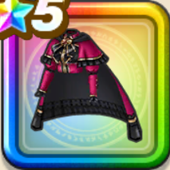

深紅のローブ上
攻略班 10点 / メラ属性耐性+5%デイン属性耐性+5%デイン属性耐性+5%イオ属性耐性+5%じゅもんダメージ+7%イオ属性じゅもんダメージ+5%【晴れ】スキルの暴走ダメージ+3%
くわしい特徴
【レベル別習得スキル】 Lv1メラ属性耐性+5% Lv5ターン開始時MPを2回復する Lv8デイン属性耐性+5% Lv10じゅもんダメージ+7% Lv12イオ属性じゅもんダメージ+5% Lv15魔力の暴走率+4% Lv15【雨/雪】魔力の暴走率+1% Lv15【晴れ】スキルの暴走ダメージ+3% Lv20デイン属性耐性+5% Lv23さいだいMP+5 Lv25イオ属性耐性+5% 【限界突破スキル】 1凸こうげき魔力+12 2凸すばやさ+12 3凸守備力+12 4凸さいだいHP+12